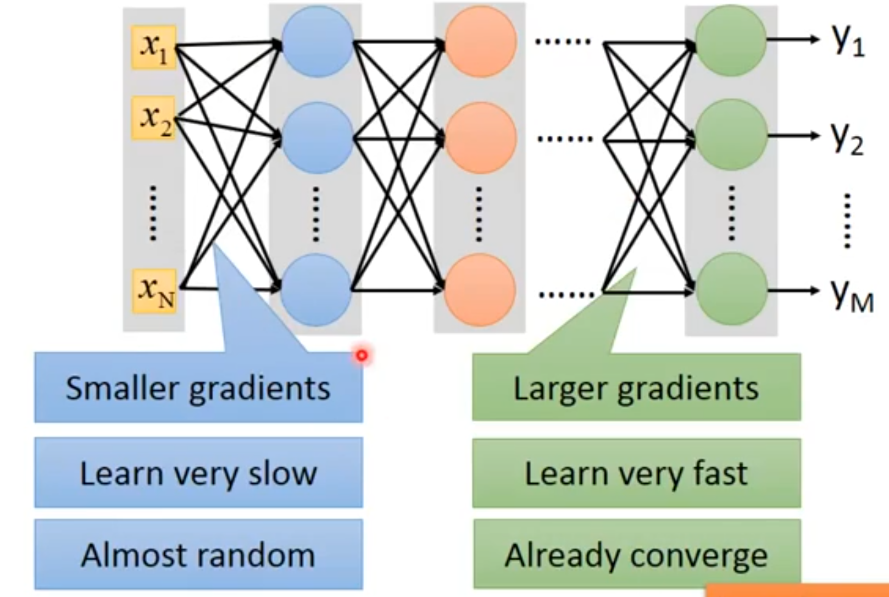

1. Sigmoid Unit和Tanh Unit
在引入整流线性单元之前，大多数神经网络使用logistic sigmoid激活函数 或者是双曲正切激活函数 这些激活函数紧密相关，因为。
我们已经看过sigmoid单元作为输出单元用来预测二值型变量取值为1的概率。
[success] sigmoid unit作为输出单元
与分段线性单元不同，sigmoid单元在其大部分定义域内都饱和——当z取绝对值很大的正值时，它们饱和到一个高值，当z取绝对值很大的负值时，它们饱和到一个低值，并且仅仅当z接近0时它们才对输入强烈敏感。 sigmoid单元的广泛饱和性会使得基于梯度的学习变得非常困难。 因为这个原因，现在不鼓励将它们用作前馈网络中的隐藏单元。 当使用一个合适的代价函数来抵消sigmoid的饱和性时，它们作为输出单元可以与基于梯度的学习相兼容。
[success]
类似cross entropy这样的代价函数，仅能解决sigmoid作为输出层时的饱和问题，无法解决sigmoid作为中间层时的饱和问题。
2. Sigmoid Unit VS Tanh Unit
当必须要使用sigmoid激活函数时，双曲正切激活函数通常要比logistic sigmoid函数表现更好。
[success]
能用ReLU时尽量用ReLU。
只有在某些情况下不能使用ReLU，才考虑使用Sigmoid。
本文最后一段有关于这种情况的具体的例子。
在而的意义上，它更像是单位函数。 因为在0附近与单位函数类似，训练深层神经网络类似于训练一个线性模型，只要网络的激活能够被保持地很小。 这使得训练网络更加容易。
[success]
tanh优于sigmoid是因为它在0附近时类似于线性，具有线性模型的优点。
sigmoid激活函数在除了前馈网络以外的情景中更为常见。 循环网络、许多概率模型以及一些自编码器有一些额外的要求使得它们不能使用分段线性激活函数，这使得sigmoid单元更具有吸引力，尽管它存在饱和性的问题。
[warning] [?]一堆还没学到的术语。
循环网络、自编码器、额外的要求、不能使用分段线性激活函数
[success] 问：什么是梯度消失问题？
答：
网络靠前位置和靠后位置的梯度相差很大。（左边是前，右边是后）。
前面由于学得慢，参数还处于随机状态，后面部分就已经趋于收敛了。此时的收敛不是真正的收敛，因此它是基于随机值算出来的收敛值。
问：为什么靠前位置的梯度会消失？
答：从直觉上讲，代表w的变化对代价函数的变化的影响程度。即
每一层的都要经过后面的很多层才会影响到最终的。
由于sigmoid激活函数的特征，每经过一层，其影响力都要减弱一点，到了最后对的影响就很小了。
对应的数学上的表现就是梯度消失。
问：怎么解决梯度消失问题？
答：换一个激活函数。例如ReLU函数。